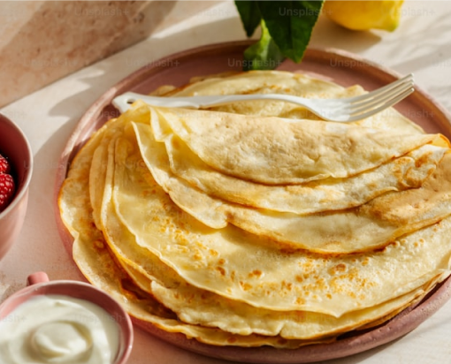
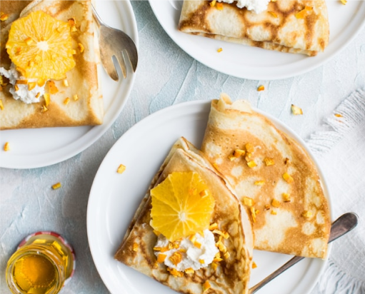

Enkelt recept på pannkakor
Gör traditionella tunna pannkakor med detta enkla och goda recept
Ingredienser
- 2 1/2 dl vetemjöl
- 1/2 tsk salt
- 6 dl mjölk
- 3 ägg
- smör (till stekning)
- sylt, bär eller frukt (till servering)
Så här gör du
- Blanda vetemjöl och salt i en stor skål.
- Vispa i mjölken lite i taget tills du får en jämn smet.
- Vispa i äggen tills smeten är slät.
- Hetta upp en stekpanna på medelhög värme och smält en klick smör.
- Häll en liten mängd smet i pannan och luta den så att smeten fördelas jämnt.
- Stek pannkakan i 1-2 minuter tills den är gyllenbrun, vänd sedan och stek andra sidan.
- Upprepa med resten av smeten, tillsätt mer smör i pannan vid behov.
- Servera pannkakorna varma med sylt, bär eller frukt.
Serveringsförslag

